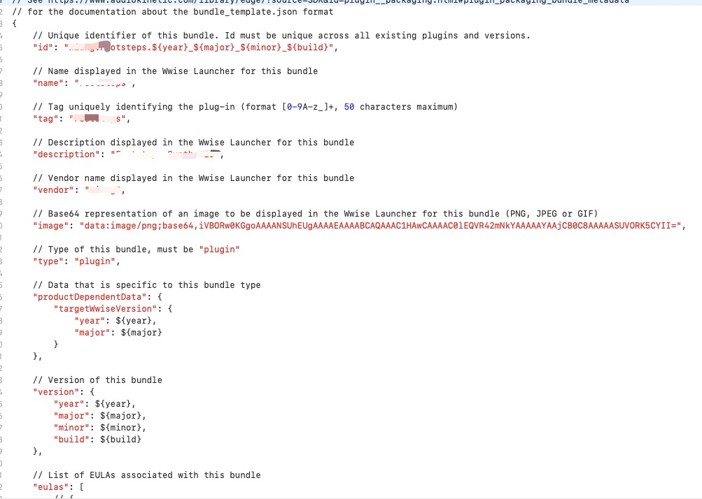

Wwise 插件开发步骤
前言
在开始建立Wwise插件之前可以通过下面两个视频对插件开发有个认识：
- Distortion失真效果器开发: Wwise Up On Air - Hands On | Creating a Plug-In for Wwise Part 1: Environment Setup & First Plug-In - YouTube)
- Metering创建和GUI设计: Wwise Up On Air Hands On | Creating a Plug-In for Wwise Part 2: UI and Monitoring Data - YouTube)
于此同时，需要预先知道一些相关关键词：
- Wwise Authoring Tool：是指声音设计师和配乐师使用的实际应用程序
- WAAPI：音频程序员使用的Wwise开发API
另外，还有一些其他有用的资源链接：
前置安装
- Python 3
- Wwise SDK
全文以Visual Studio 2019为例，安装时选择SDK
创建工程
该步骤也可以看Wwise官方-> 创建音频插件
-
首先通过python命令运行创建工程的命令。默认安装目录为“C:\Program Files (x86)\Audiokinetic\Wwise 2021.1.9.7847”
这里通常建议将SDK放在C盘，因为文件需要与Visual Studio相关的部件进行匹配
py "C:\Program Files (x86)\Audiokinetic\Wwise 2021.1.9.7847\Scripts\Build\Plugins\wp.py" new -
输入需要创建的插件类型：
可选类型：source, sink, object_processor, mixer, effect
我们以创建一个源插件为例子。
source -
为插件名并进入文件。
此时命令行会让你依次输入如下信息
project name: MyNewSource display name: new author: miasol description: A new source plug-in创建完毕，为们使用cd命令，进入文件夹
cd MyNewSource -
对插件进行Premake。我们使用的是Visual Studio 2019，所以对应的是VC160
python "%WWISEROOT%/Scripts/Build/Plugins/wp.py" premake Windows_vc160 python "%WWISEROOT%/Scripts/Build/Plugins/wp.py" premake Authoring -
在文件管理器打开刚刚创建的文件夹。打开红框工程就能进行插件编写了。
-
Build工程
我们现在先build一下工程在Wwise中进行测试。
python "%WWISEROOT%/Scripts/Build/Plugins/wp.py" build -c Release -x x64 -t vc160 Authoring有几点需要注意：
- 插件一定要在Windows系统上进行Build
- 编写插件的时候，可能需要在Wwise中运行时进行Debug，此时需要Visual Studio中的“附加到运行程序”功能，详细步骤可以参考：Wwise SDK, How to step through code using Visual Studio Debugger?
-
在Wwise中加载
Default Work Unit -> Actor-Mixer Hierarchy -> New Child -> MyNewSource
插件打包
打包插件的作用是可以将插件进行分享和发布，并能在Wwise中通过install按钮对其进行安装。
Windows
-
依次执行以下命令，为Authoring Tool和Sound Engine进行打包
注意version后面的版本号需要与你本地安装的Wwise版本一致，比如我安装的是2021.1.13
python "%WWISEROOT%/Scripts/Build/Plugins/wp.py" package Authoring --version 2021.1.1.1 python "%WWISEROOT%/Scripts/Build/Plugins/wp.py" package Windows_vc160 --version 2021.1.1.1此时我们可以在项目工程中看到两个tax文件（截图截的Mac但是打包操作是在Windows进行的）
同时注意到文件夹里面有一个叫
bundle_template.json的文件，打开可以看到一些插件信息。-
生成bundle
python "%WWISEROOT%/Scripts/Build/Plugins/wp.py" generate-bundle --version 2021.1.1.1现在文件夹中出现了
bundle.json文件 -
最终打包
- 此时新建一个文件夹，例如我的新建文件夹叫“FootstepsSynth_v2021.1.1”，可以按照“ProjectName_vxxxx.x.x”的格式命名。
- 把1.中的三个tax和
bundle.json移动到“ProjectName_vxxxx.x.x”
-
在Wwise中测试是否能加载
打开Wwis，选择plug-in -> Add from directory，然后定位到“ProjectName_vxxxx.x.x”
-
加载完成后可以得到如下界面，然后正常安装Wwise插件即可
-
如果要进行分享，可以将“ProjectName_vxxxx.x.x”文件夹进行压缩。拿到压缩包以后，在步骤4中的pu lg-in处需要选择Add from archive
-
Mac
Mac的步骤要复杂一些，首先我们需要在Windows系统上完成new、premake、build，然后将文件复制到Mac系统。然后按照下面的步骤进行操作。
-
cd命令进入文件夹，输入如下命令
注意！中间的目录是你自己的Wwise SDK安装目录，建议在文件夹里找到“wp.py”文件，然后在命令行输入python再将文件拖拽入命令行后输入premake Mac
python /Applications/Audiokinetic/Wwise\ 2021.1.10.7883/Scripts/Build/Plugins/wp.py premake Mac -
用Xcode打开，文件下面的“.xcworkspace”工程，然后在下图找到“development team”，点击选择“other”再删除，让其变成空的
-
在xcode里面直接进行build 使用命令行
python /Applications/Audiokinetic/Wwise\ 2021.1.10.7883/Scripts/Build/Plugins/wp.py build Mac -c Release -x arm64这里我还是比较推荐直接在xcode build，因为能更直观看到报错的原因。比如我build的时候，发现使用了windows相关的包导致build失败。
-
将文件转移回到Windws系统，依次输入
python "%WWISEROOT%/Scripts/Build/Plugins/wp.py" package Authoring --version 2021.1.1.1 python "%WWISEROOT%/Scripts/Build/Plugins/wp.py" package Windows_vc160 --version 2021.1.1.1 python "%WWISEROOT%/Scripts/Build/Plugins/wp.py" package Common -v2021.1.1.1 -
回到Mac系统进行打包，文件位置注意事项跟步骤1一样
python /Applications/Audiokinetic/Wwise\ 2021.1.10.7883/Scripts/Build/Plugins/wp.py package Mac -v2021.1.1.1 -
最后回到Windows进行bundle
注意windows上的Wwise一定要安装Apple开发的SDK否则这里会打包失败
python "%WWISEROOT%/Scripts/Build/Plugins/wp.py" generate-bundle --version 2021.1.1.1 -
之后的其他安装步骤就跟windows一样了